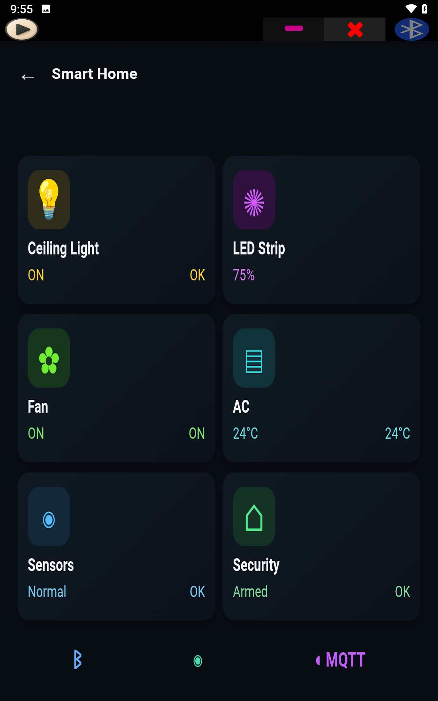
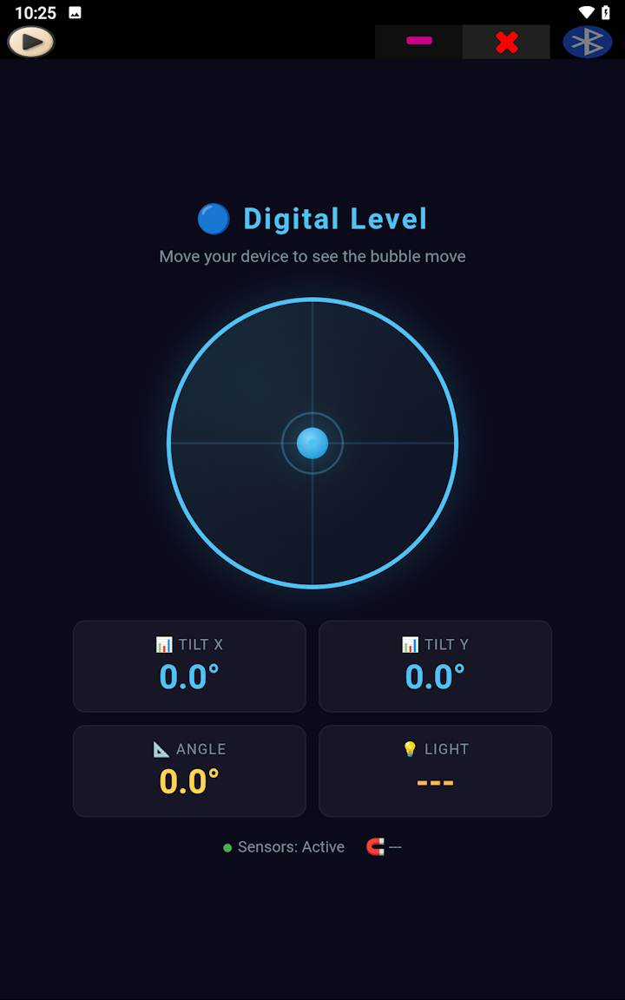

SoifGo — бесплатное Android-приложение для создания и архивации пользовательских инструментов: калькулятор, симулятор, учебный инструмент, панель управления и даже контроллер оборудования, без написания нативного Android-кода.


Всё, что возможно на веб-странице, возможно и в SoifGo. SoifGo запускает ваши инструменты в виде HTML и архивирует их в папках. От калькулятора и симулятора до учебного инструмента и панели управления, и при необходимости — управление оборудованием через Bluetooth и MQTT.
Если вы умеете писать веб-страницу или описать свою задачу ИИ-ассистенту, вы можете создать свой собственный инструмент.
Специализированные калькуляторы, графики и функции, симуляции и решатели — точно по вашим потребностям.
Интерактивные инструменты для урока, упражнений и тестов. Отправьте файл ученикам, чтобы они запустили его сами.
Инженерный калькулятор, конвертер единиц и личные расчётные таблицы — доступны на работе и офлайн.
Контроллер и панель Bluetooth и MQTT для Arduino, ESP32, ESP8266 и Raspberry Pi.
Опишите идею ИИ-ассистенту, получите HTML-код и запустите его в SoifGo.
Готовы создать свой первый инструмент?
Скачать SoifGo →
Любое устройство, использующее Bluetooth SPP (например, HC-05 и HC-06),
MQTT или HTTP REST, работает с SoifGo:
Arduino, ESP32, ESP8266 и Raspberry Pi.
Отправляйте команды для LED, мотора и реле по Bluetooth, создайте мост Bluetooth в MQTT, или постройте живую панель для датчиков — всё на HTML, без нативного кода.
SoifGo предоставляет папки и страницы для упорядоченного хранения вашей работы. На каждой странице у вас 40 кнопок и 10 ползунков, и каждая кнопка может быть настроена на определённые действия, включая навигацию между папками и страницами. Так вы можете создать много меню.
У кнопок есть готовый дизайн: цвет, иконка, название, шрифт, звук и вибрация. Их можно перемещать перетаскиванием. Каждая кнопка может иметь базовые действия, такие как отправка и приём.
«Веб-поведение» (WebView) помогает реализовать ваши идеи с максимальными возможностями и на HTML, как онлайн, так и офлайн. Просто опишите свою задачу ИИ-ассистенту и попросите HTML-код. Затем у вас два пути:
Оба способа работают, и ваше веб-приложение архивируется в папке SoifGo. Будь то калькулятор, Bluetooth-контроллер, IoT-мониторинг или что угодно другое.
На каждой странице вы можете иметь 40 разных веб-приложений. Не нужно запрашивать их у ИИ-ассистента каждый раз, и вы можете работать с ними офлайн. Вы даже можете отправить их коллегам и друзьям, чтобы они скачали и запустили.
Современный браузерный движок: Canvas, SVG, WebGL и библиотеки Chart.js, D3, Three.js для графиков, симуляций и 3D-отображения.
Готовые кнопки и ползунки, без кода, для простых управлений и меню.
Хранение данных с помощью localStorage даже после закрытия приложения.
Освещённость, движение (акселерометр) и магнитометр в реальном времени.
Преобразование речи в текст и использование в ваших инструментах или отправка на устройства.
Отправка и приём текста с HC-05, HC-06, JDY-31, Arduino, ESP32 и Raspberry Pi.
Подключение к любому брокеру (tcp или ssl), publish и subscribe и проверка состояния.
Отправка JSON на любой адрес, получение и извлечение значения из ответа.
Нет. Подключение к оборудованию — лишь одна из функций. Поскольку инструменты построены на HTML, всё, что возможно на веб-странице — вычисления, графики, симуляции и учебные инструменты — также возможно в SoifGo.
Да. Полностью бесплатный, без рекламы и встроенных покупок.
Инструменты HTML, Bluetooth и датчики телефона работают без интернета. Только MQTT и HTTP требуют подключения к сети.
Любое устройство, использующее Bluetooth SPP (например, HC-05 и HC-06), MQTT или HTTP REST, включая Arduino, ESP32, ESP8266 и Raspberry Pi.
Достаточно базовых знаний HTML. Даже без них вы можете описать свою задачу ИИ-ассистенту и получить HTML-код. Учебники и готовые примеры доступны на главной странице.
Главная страница открывается с загрузкой, учебниками и документацией, а русский перевод активируется автоматически.
Войти в SoifGo → Бесплатно, офлайн, без рекламы — для Android 7 и выше